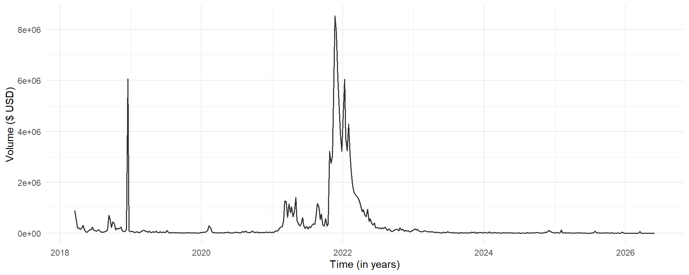
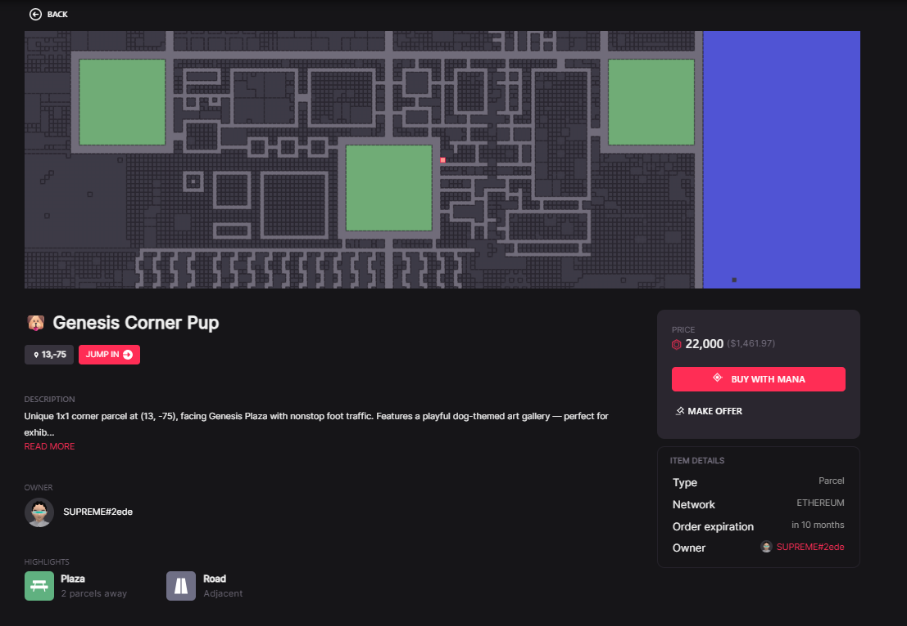
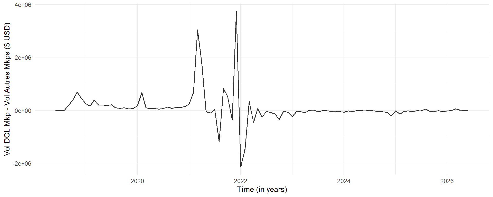

| 1st Sales |
2nd Market Dcl Marketplace |
2nd Market 3rd Party Marketplaces |
|||
|---|---|---|---|---|---|
| Year | Lands | Lands | Estates | Lands | Estates |
| L'année 2026 inclut uniquement les données de janvier à mai 2026. Les volumes sont exprimés en milliers de dollars. Source: Données collectées par les auteurs | |||||
| 2018 | 12592 | 1520 | 2238 | 8.3 | 0.27 |
| 2019 | 9.7 | 2021 | 2652 | 32.4 | 2.26 |
| 2020 | - | 2021 | 2342 | 271.4 | 109.19 |
| 2021 | - | 39200 | 44340 | 30120.7 | 808.19 |
| 2022 | - | 22039 | 35742 | 26666.3 | 213.39 |
| 2023 | - | 856 | 1943 | 1464.9 | 18.58 |
| 2024 | - | 285 | 695 | 870.7 | 6.34 |
| 2025 | - | 233 | 464 | 626.4 | 144.34 |
| 2026 | - | 100 | 94 | 59.1 | 54.26 |
| Total | 12601.7 | 68276 | 90510 | 60120.2 | 1356.83 |
Dynamique spatio-temportelle de la liquidité des parcelles de métavers
Mises à jour
05 Août 2026
- Section Section 4 Données;
- Mise à jour de la sous-section Section 4.1: Base de données
04 Août 2026
- Mise à jour de la section Section 1.4: Hypothèses de recherche
- Mise à jour de la section Section 2: Présentation du métavers Decentraland
- Rédaction de la section Section 3: Méthodologie
30 Juillet 2026
- Création du document
1 Introduction
1.1 Contexte et présentation du métavers
Les avancées technologiques en informatique et en cryptographie ont permis l’essor de nouveaux actifs numériques décentralisés quasi inviolables, à savoir les cryptomonnaies et les NFTs. Alors que les premiers sont conçus comme substituts décentralisés aux monnaies classiques, pouvant alors servir comme monnaie d’échange ou canaux d’investissement pour des projets numériques (via des ICO notamment), les seconds représentent des titres de propriété numériques d’un bien (physique ou numérique) tel une oeuvre d’art, un titre foncier, etc… Les cryptomonnaies et les NFT s’appuient sur la technologie blockchain. La blockchain est une base de données décentralisée distributée dans un réseau dont les noeuds sont tous, à importance égale, responsables de la sécurité et de la fiabilité des données via des règles et protocoles mathématiques robustes.
L’essor des cryptomonnaies et des NFT a, au début des années 2020, remis au goût du jour le concept de métavers, qui désigne des mondes numériques en 3D immitant le monde réel, tant sur des aspects sociaux (interaction entre individus, création de communautés, communication et partage d’information), que commerciaux (échange/vente de biens et de services, promotion de marques, fidélisation client). Pour les métavers post-NFT, la parcelle de terrain, généralement appelée LAND, représente l’actif le plus important: elle permet d’établir une présence dans le monde virtuel, pour y développer des activités sociales et commerciales, à l’exemple des pages ou comptes de réseaux sociaux classiques.
Du potentiel technologique, social et commercial du métavers a découlé des incitatifs de même nature chez divers d’investisseurs d’y établir une présence (Ante et al. 2023). Ainsi, les métavers ont connu entre 2019 et 2021 un intérêt croissant considérable. Pour exemple, les volumes de ventes de parcelle du métavers Decentraland, reportés sur la figure Figure 1, témoignent à suffisance du fort intérêt porté vers cet actif en 2021. Le point culminant de cet intérêt global croissant pour le métavers a été le rebranding de Facebook en META, le 28 octobre 2021, suivi des annonces d’investissement de la firme dans des projets de métavers.
Code
library(dplyr)
library(tidyr)
library(lubridate)
library(ggplot2)
tmp <- readRDS(file = "transactions.RDS")
p <- tmp |>
filter(type == "transfer", asset_contract == "0xf87e31492faf9a91b02ee0deaad50d51d56d5d4d", is_sale == T, !is.na(amount_usd)) |>
select(date, amount_usd) |>
mutate(week = lubridate::floor_date(date, unit = "week", week_start = 1)) |>
summarise(
vol = sum(amount_usd, na.rm=T),
.by = c("week")
) |>
ggplot(aes(x = week)) +
geom_line(aes(y = vol), color = "#333", linewidth = 0.7) +
labs(
x = "Time (in years)",
y = "Volume ($ USD)"
) +
theme_minimal()
rm(list = c("tmp"))
p
Source: Données collectées par les auteurs
Malgré cet intérêt croissant qui laissait présager un avenir radieux pour le métavers, l’année 2022 a été l’année d’une grose crise des cryptomonnaies, dont de nombreux scandales survenus cette année furent à l’origine: notamment l’effondrement de Terra/Luna et la fraude FTX, pour ne citer que les plus notables d’entre eux. Les cryptomonnaies représentant les principaux canaux d’investissement et d’achat de NFTs, cette crise crypto s’est mécaniquement répercutée sur les NFTs et donc sur les parcelles virtuelles. Les investissement métavers ont chuté et depuis lors, et n’ont plus jusqu’à nos jours jamais retrouvés leur état d’avant 2022.
1.2 Littérature sur le métavers
La littérature actuelle sur le métavers porte essentiellement sur la volarisation des parcelles. Les principaux résultats montre à l’aide de modèles hédoniques de la littérature en économie urbaine réelle l’existence d’une prime de localisation dans la valorisation des parcelles virtuelles.
(Goldberg et al. 2024) décrivant le métavers comme un monde régi par une économie de l’attention, formalisent la valeur d’une parcelle comme dépendante du flux attentionnel qu’elle est capable de capter ou de susciter, ce flux étant lié à sa localisation. Ils montrent ensuite empiriquement que la localisation détermine les prix d’émission des parcelles au lancement du métavers Decentraland, même lorsque l’on tient compte de la téléportation rendue possible dans le monde virtuel.
(Yencha 2023) complémente les résultats de (Goldberg et al. 2024) en y apportant des évidences d’autocorrélation spatiale des prix d’émission, et (Kawai et al. 2025) montrent que dans les marchés sécondaires, les primes de localisation s’aménuisent avec le temps, et atteignent leur minimum global en période de bulle crypto-métavers (2021 et 2022).
Plusieurs autres études complémentent celles citées ci-dessus:
- (Saengchote et al. 2023) montrent que l’émission de parcelles nouvelles dans le métavers TheSandbox apprécient les prix des parcelles alentours sur les marchés secondaires, apportant l’évidence d’un effet de réseau cohérent avec l’hypothèse d’attention de (Goldberg et al. 2024).
- (Saengchote 2022) établissement une relation causale au sens de Granger entre les prix des cryptomonnaies (largement utilisés comme canaux d’investissement dans les métavers ou monnaie d’échange dans les transactions en parcelles et autres biens du métavers) et les prix de parcelles des métavers Decentraland et TheSandbox.
- (Dowling 2021) montre que les marchés secondaires de parcelles de métavers sont inéfficients.
La liquidité reste très peu abordée dans la littérature sur le métavers. (Kawai et al. 2025) dans leur étude sur l’impact de la bulle crypto-métavers de 2021-2022 sur le métavers Decentraland, mettent en évidence le rôle des premiers investisseurs du métavers Decentraland en tant que fournisseurs de liquidité durant la bulle métavers-crypto en 2021-2022. Aucune étude à notre connaissance n’adresse spécifiquement la question de la liquidité des parcelles virtuelles, de sa dynamique spatiale et temporelle.
Ce double adressage est pertinent car la valeur d’un NFT comporte deux composantes (Schwiderowski et al. 2023):
- Une composante intrinsèque tributaire des caractéristiques propres du NFT dont la rareté (Tae-Woong and Se-Hak 2026; Schwiderowski et al. 2023; Fortagne and Lis 2023), et l’utilité (Kräussl and Tugnetti 2023),
- Une composante extrinsèque portée par le marché dans lequel il évolue, et dont les déterminants peuvent être le flux informationnel et les frictions de marché (Wilkoff and Yildiz 2023), les régimes de marché (Kawai et al. 2025) et les cryptomonnaies associées au métavers (Qiao et al. 2023; Nakavachara and Saengchote 2022a, 2022b).
De plus, la littérature en économie urbaine identifie la localisation et les régimes de marché comme éléments déterminants de la liquidité immobilière ().
1.3 Problématique et contribution
Dans cette note, nous analysons la dynamique de la liquidité des parcelles de métavers, sous l’angle spatial (via la localisation qui représente le principale caractéristique intrinsèque des parcelles en tant que NFTs), et sous l’angle temporel (via les régimes de marché et l’intérêt général porté sur le métavers). Ainsi, la question de recherche à laquelle nous escomptons apporter des réponses est la suivante:
Comment la localisation influence la liquidité des parcelles virtuelles, et comment cette influence varie dans le temps ?.
A notre connaissance, l’article de laquelle découlera cette note sera le premier à adresser spécifiquement la question de la liquidité des parcelles virtuelles. Notre contribution à la recherche sur ces marchés émergents, en lien notamment avec la littérature immobilière, est multidimensionnelle.
La microstructure de marché de NFTs est tributaire des caractéristiques intrinsèques (collections, rareté, utilité) et extrinsèques (cryptomonnaies, régime de marché, asymétrie d’information) de ces actifs. Le métavers rajoute une composante spatiale encore non adressée dans la littérature, gap que notre article comble en examinant la composante spatiale de la liquidité des parcelles virtuelles, et son évolution dans le temps via ses interactions avec les régimes de marché et l’intérêt suscité par le métavers.
La littérature en économie urbaine identifie deux canaux d’influence de la localisation sur la liquidité, à savoir les frictions de recherche et l’asymétrie d’information. Ces canaux impliquent une hétérogénéité de la liquidité, par l’existence de dynamiques locales de celle-ci. Dans le métavers, les frictions de recherche sont largement diminués car les annonces de vente de parcelle sont centralisées sur les plateformes de vente. La localisation d’une parcelle à vendre ne détermine pas sa visibilité aux potentiels acheteurs. Les frictions de recherche sont des frictions liées à la plateforme de vente, à l’ancienneté de l’annonce et aux stratégies de promotion des vendeurs. De plus, l’écart informationnel est également grandement diminuée dans le métavers car les caractéristiques des parcelles sont accessibles par tous. L’asymétrie d’information porte plus potentiellement sur des évènements pouvant influencer le marché à l’échelle global plutôt qu’à l’échelle locale ou parcellaire. Ainsi, le métavers constitue un excellent laboratoire d’étude de la liquidité, dans lequel les mécanismes identifiées en immobilier classique ont une moindre voire une insignifiante influence. Le rapprochement des dynamiques de liquidité entre le monde virtuel et le monde réel est pertinent du fait de la proximité des dynamiques de prix déjà établie dans la littérature entre ces deux univers.
En outre, nous étendons les résultats de (Kawai et al. 2025) sur la fourniture de liquidité, en examinant sa relation entre la localisation. Nous adressons plus spécifiquement l’impact de la localisation sur la disponibilité de parcelles sur le marché, à travers la mise sur le marché de parcelles nouvelles et la remise sur le marché des parcelles invendues.
1.4 Hypothèses de recherche
Nous examinons la dynamique spatio-temporelle de la liquidité immobilière virtuelle à partir des transactions d’annonce de vente (listings) de parcelle du métavers Decentraland, faites entre 2019 et 2024, via la place de marché officielle dédiée à la vente biens/d’objets Decentraland. Notre analyse est faite sous trois axes:
Axe (1): L’influence de la localisation sur le taux et la vitesse de vente, et son évolution dans le temps en fonction des régimes de marché et de l’intérêt général suscité par le métavers. (Goldberg et al. 2024) montrent que la localisation détermine les prix d’émission des parcelles, et (Kawai et al. 2025) montrent que cette influence persiste en marché secondaire au lancement du métavers, et décline dans le temps. Nous faisons l’hypothèse qu’il en est de même pour la liquidité, en régime de marché normal. De plus, le marché des parcelles virtuelles étant inéfficient et sujet à de fortes volatilités (Dowling 2021), nous faisons l’hypothèse l’affaiblissement du lien entre localisation et liquidité constaté en économie urbaine (Insérer citations), et celui entre localisation et prix constaté par (Kawai et al. 2025) est encore plus marqué concernant la liquidité. D’autre part, étant donné la nature d’économie d’attention des mondes virtuels postulée par (Goldberg et al. 2024), nous faisons l’hypothèse d’une dépendance de forme convexe entre la localisation et la liquidité. Par ailleurs, la littérature immobilière (Insérer citations) met en évidence le caractère inhibiteur de l’attention générale suscitée chez les investisseurs sur la l’influence de la localisation sur la liquidité, nous faisons la même hypothèse pour la liquidité immobilière virtuelle. Ainsi, pour ce premier axe, nous formulons l’es hypothèses suivantes l’hypothèse suivante:
H1: La localisation d’une parcelle, représentée par sa distance par rapport au centre du métavers, détermine sa liquidité, représentée par la vitesse et la probabilité de vente de la parcelle. La relation entre localisation et liquidité possède quatre propriétés:
- H1-P1: En régime de marché normal, elle est significative;
- H1-P2: En régime de marché anormal (expansion ou récession), elle est fortement diminuée, voire non significative;
- H1-P3: Lorsqu’elle elle existe, elle est décroissante et convexe;
- H1-P4: Elle est attenué par l’intérêt général suscitée par le métavers lorsque celui-ci est pris en compte;
Axe (2): L’existence d’une composante locale de la liquidité. S’appuyant sur les résultats de (Yencha 2023) sur l’existance d’autocorrélation spatiale des prix d’émission des parcelles Decentraland, nous faisons l’hypothèse qu’en plus de l’influence de la proximité aux aménités, la dynamique de marché du voisinage d’une parcelle détermine sa liquidité. Autrement dit, la liquidité comporte une composante spatiale relative, liée au voisinage, en plus d’une composante spatiale absolue, représentée par la proximité aux aménités. Cette hypothèse postule ainsi l’existence d’une microstructure locale du marché immobilier virtuel, caractéristique non observable pour d’autres catégories de NFT, de par leur nature non spatiale. Nous formulons ainsi l’hypothèse suivante:
H2: Il existe une microstructure locale du marché immobilier virtuel: la liquidité est déterminé localement par la dynamique de son voisinage en plus de l’être globalement par la localisation.
Axe (3): L’influence de la localisation sur la fourniture de liquidité dans le marché de parcelles. Nous postulons que la localisation détermine également l’offre de parcelles sur le marché. (Kawai et al. 2025) mettent en évidence le rôle des pionniers du métavers dans la fourniture de liquidité en période de boom, et les bénéfices globaux engrangés par ceux-ci au détriment des nouveaux arrivants. Cette hypothèse vise à compléter leurs observations, en mettant en évidence le rôle de la localisation dans la fourniture de liquidité et les bénéfices engrangés. De plus, nous postulons également que la localisation détermine la gestion des parcelles invendues, tant sur la remise sur le marché que sur la révision de prix. Nous formulons ainsi l’hypothèse suivante:
H3: La localisation détermine la provision de liquidité immobilière dans le métavers et les bénéfices/pertes des fournisseurs de liquidité. Trois propriétés de cette double relation sont à noter:
- H3-P1: La localisation influence tant la fourniture de parcelles nouvelles sur le marché que la gestion des parcelles présentes et invendues.
- H3-P2: La relation entre localisation et fourniture de liquidité varie selon les régimes de marché: elle est plus marquée en régime normal qu’en régime anormal.
- H3-P3: Une parcelle proche du centre génère plus de bénéfices d’un régime normal à un régime d’expansion, et moins de perte d’un régime d’expansion à un régime de récession. Toutefois, l’ensemble des parcelles excentrées génèrent plus de bénéfices d’un régime normal à un régime d’expansion.
1.5 Bref aperçu des résultats
Nos résultats suggèrent premièrement que la localisation, représenté par la distance au centre du métavers, détermine significativement la liquidité mesurée par le temps et la probabilité de vente d’une parcelle. Toutefois, cela est valable uniquement en régime normal, qui correspond à la période de lancement du métavers Decentraland entre 2019 et 2020. A partir de 2021, la dynamique de liquidité se détache de la localisation. De plus, nous montrons que l’intérêt général suscité par le métavers inhibe l’effet de la localisation sur la liquidité, quelque soit la période temporelle observée. Par ailleurs, lorsque l’acheteur souhaite renégocier le prix d’annonce, les parcelles éloignées du centre font le plus l’objet de demande de rénégociation, ont le plus faible écart de prix de rénégociation, mais ne sont pas plus liquides après renégociation que les parcelles proches du centre. Ce dernier résultat suggère que l’effet de la localisation sur la liquidité est très faiblement altérée par la capacité de renégociation de prix des acheteurs.
De plus, nos résultats suggère que la liquidité, en plus d’être globalement déterminé par la localisation d’une parcelle, est également localement déterminée par le voisinage de celle-ci. En effet, indépendamment de la proximité d’une parcelle aux aménités du métavers, l’appartenance de celle-ci à un voisinage dynamique (forte disponibilité sur le marché forte liquidité passée de parcelles alentours) apprécie sa liquidité. Contrairement à ce qu’impliquerait la faible prégnance des frictions de recherche et de l’écart informationnel dans le métavers, la liquidité n’est pas homogène, mais comporte une composante locale. Ce résultat, bien que issu de transactions en marché secondaire, est cohérent à ceux de (Yencha 2023) sur les prix en marché primaire.
Enfin, nos résultats sur la disponibilité des parcelles sur le marché suggère que la localisation est indépendante de l’offre de parcelles sur le marché en régime normal, et dépendante pour tous les autres régimes. La remise sur le marché des parcelles invendues et la révision de prix de ces dernières apparait fortement liée à la localisation principalement durant les régimes d’expansion et de récession entre 2021 et 2022, témoignant du fait que l’intérêt culminant suscité par le métavers, et le crash qui s’en est suivi se sont répercutés sur le comportement des vendeurs de parcelles.
2 Présentation du métavers Decentraland
Nous examinons les hypothèses H1, H2 et H3 formulées ci-dessous sur les données transactionnelles du métavers Decentraland (Ordano et al. 2017). Decentraland est le premier métavers s’articulant autour de la blockchain et des NFTs. Annoncé en 2017, il n’a rééllement été lancé que le 20 février 2020, après deux campagnes d’émission de parcelles virtuelles en Mars et Novembre 2018. En Octobre 2018, la marketplace officielle du métavers voit le jour, permettant aux investisseurs, bien que le monde virtuel n’était pas encore achevé, de s’échanger des parcelles et autres objets du métavers.
2.1 Géographie du métavers
La géographie de Decentraland en fait un monde de forme presque carrée, composé d’un peu plus de 300 parcelles de côté, pour un total de 92 576 parcelles. 48 096 d’entre elles y abritent les principales aménités du métaversé, tandis que les parcelles restantes sont destinées à un usage privé pour les personnes qui en ont le droit le propriété.

La figure Figure 2 illustre la disposition des parcelles et aménités du métavers Decentraland. Nous avons:
- Les plazas en blanc, dont une centrale et huit disposées tout autour de la carte, sur les points cardinaux et les diagonales. Les plaza sont les principaux lieux de socialisation et carrefours d’activités pour les utilisateurs dans le métavers. Le plaza central est particulièrement plus important que les autres, car c’est le point d’arrivée par défaut de toute nouveau visiteur dans le métavers.
- Les routes en noir, sont les axes de circulation dans le métavers. L’exploration dans le monde virtuel peut fait à pied ou via un tramway faisant le tour du monde virtuel, bien qu’il soit également possible de se téléporter d’un point à un autre dans Decentraland.
- Les districts en bleu, qui désignent des groupes de parcelles rassemblées autour d’un thème ou d’une communauté. En somme, les districts sont des quartiers thématiques ou communautaires dans le métavers. Ces quartiers ne sont pas à vendre et possèdent leurs propres règles de gouvernance. Ils ont été à la suite de proposition soumises par des utilisateurs et validées ensuite par l’instance de gouvernance du métavers.
Le reste de parcelles, en vert, sont des parcelles à usage privée, s’échangeant sur les marchés immobiliers virtuels. Chaque parcelle dans le métavers est identifiée par ses coordonnées cartésiennes \((X,Y)\), qui renseignent sur sa position exacte sur la carte.
Le détenteur d’un ensemble de parcelles juxtaposées peut les combiner de manière à former un unique bien immobilier à partir de ces parcelles: il s’agit d’un domaine ou estate. Les domaines, à la différence des parcelles, se distinguent donc en plus de leurs localisations, par leurs tailles (nombre de parcelles desquelles elles sont constituées). Les domaines s’échangent également en marché secondaire.
2.2 Marché immobilier du métavers
Le marché primaire des parcelles Decentraland regroupe les émissions de parcelles réalisées en Mars et Décembre 2018. A partir d’octobre 2018, Decentraland, les possesseurs de parcelles et les personnes désireuses d’en acquérir se sont vus offrir la possibilité d’échanger entre eux des parcelles, et d’autres objets Decentraland via une plateforme dédiée, que nous désignerons par la suite par DclMarketplace. Sur cette plateforme, les détenteurs de parcelles peuvent poster des annonces de vente de parcelle. La figure Figure 3 illustre la page d’annonce d’une parcelle listée.

On peut y voir les coordonnées de la parcelle à vendre accompagnée d’une image illustrant la position de la parcelle sur la carte du métavers, le prix demandé par le vendeur, une description de la parcelle, ses avantages de proximité aux aménités (plaza, route, district), la date d’expiration de l’annonce de vente et les coordonnées du vendeur.
En plus de Dcl Marketplace, les investisseurs peuvent s’échanger des parcelles via des marketplaces externes à Decentraland. Il s’agit de plateformes spécialisées dans l’échange de NFTs entre pairs, dont les plus populaires sont Opensea, Rarible et LooksRare. Comme le montre la figure Figure 4, DCL Marketplace domine en termes d’activité transactionnelle jusqu’en 2022. A partir de 2022, les ventes de parcelles sont majoritairement faites via les marketplaces externes.
Code
library(dplyr)
library(tidyr)
library(lubridate)
library(ggplot2)
tmp <- readRDS(file = "transactions.RDS")
p <- tmp |>
filter(type == "transfer", asset_contract == "0xf87e31492faf9a91b02ee0deaad50d51d56d5d4d", is_sale == T, !is.na(amount_usd)) |>
select(date, amount_usd, sale_related_market) |>
filter(sale_related_market %in% c("dcl-marketplace-1", "dcl-marketplace-2", "third-party-marketplace")) |>
mutate(
week = lubridate::floor_date(date, unit = "week", week_start = 1),
month = lubridate::floor_date(date, unit = "month"),
) |>
summarise(
vol_dcl = sum(amount_usd[which(sale_related_market %in% c("dcl-marketplace-1", "dcl-marketplace-2"))], na.rm=T),
vol_3pm = sum(amount_usd[which(sale_related_market %in% c("third-party-marketplace"))], na.rm=T),
.by = c("month")
) |>
mutate(
vol_diff = vol_dcl - vol_3pm
) |>
ggplot(aes(x = month)) +
geom_line(aes(y = vol_diff), color = "#333", linewidth = 0.7) +
labs(
x = "Time (in years)",
y = "Vol DCL Mkp - Vol Autres Mkps ($ USD)"
) +
theme_minimal()
rm(list = c("tmp"))
p
Source: Données collectées par les auteurs
Des figures Figure 1 et Figure 4, il se dégage quatre grandes phases ou moments qui caractérisent les marchés secondaires Decentraland, et auxquelles correspondent quatre régimes de marché:
- La phase 1, ou lancement du métavers, qui correspond à un régime de marché normal. Cette phase s’étend de 2018 à 2020, et est caractérisée à un légère croissance de l’activité transactionnelle. La métavers est nouveau, les premiers investisseurs arrivent et acquièrent des parcelles soit sur le marché primaire soit sur le marché secondaire. Au lancement du monde virtuel en février 2020, la croissance des investissements devient légèrement plus marquée.
- La phase 2, ou boom crypto-métavers, qui correspond à un régime d’expansion forte. Cette phase s’étend sur toute l’année 2021 et est caractérisée par une hausse substantielle des investissements dans Decentraland. Les volumes de ventes en mars 2021 sont multipliés par 10 par rapport à ceux de 2020, et ceux d’octobre 2021 sont multipliés par plus de 80. Cette période est aussi caractérisée par une hausse générale du marché crypto et NFT (Insérer citations).
- La phase 3, ou crash crypto-métavers, qui correspond à un régime de récession forte. Cette phase s’étend sur toute l’année 2022 et est caractérisée par une chute spectaculaire des investissements dans le métavers, des prix des parcelles, et des cryptomonnaies et NFT en général. C’est la période d’éclatement de la bulle crypto-nft-métavers.
- La phase 4, ou période déserte du métavers, qui correspond à un régime de récession faible. Cette phase s’étend de 2023 jusqu’à nos jours. Elle prolonge, avec néanmoins une amplitude beaucoup plus faible, la tendance baissière de la phase précédente. La population et les investisseurs désertent le métavers, ce dernier semblant redevenir une niche pour passionnés.
3 Méthodologie
3.1 Temps sur le marché et conversion en vente
Nous examinons la liquidité immobilière virtuelle par la vitesse et le probabilité de vente d’une parcelle listée sur le marché. Pour cela, nous collectons les annonces de ventes de parcelles Decentraland. La liquidité immobilière se caractérisant comme étant la survenue d’un évènement (vente) au bout d’un certain temps (temps sur le marché), nous la modélisons par des modèles de survie et de hasard, largement employées en littérature immobilière pour modéliser le temps sur le marché (Kluger and Miller 1990; Yilmaz et al. 2022; Cajias et al. 2020) ou le risque de défaut sur les prêts immobiliers (Arents 2019; Peng and Lessmann 2026; Yolanda 2020).
Contrairement aux modèles de régressions linéaires et logistiques classiques, ces modèles formalisent la probabilité de survenue d’un événement en tenant compte de cas de censure, qui désignent les observations pour lesquelles l’événement n’a pas eu lieu (non vente). Ces modèles possèdent plusieurs formalismes, dont deux d’entre eux en particulier sont plus que pertinents dans notre contexte. Le premier est le modèle à temps accéléré (Accelerated Failure Time) ou AFT (Kalbfleisch and Prentice 2002), qui postule que les variables d’intérêt agissent sur le temps de survenue de l’événement en l’accélérant (effet contractif) ou en le ralentissant (effet dilatatif). Le formalisme AFT est approprié pour modéliser le temps sur le marché d’une parcelle vendue.
\[ \begin{align} &\Lambda (t | \theta) = \theta . \Lambda_0 (\theta . t) \\ &\theta = exp \left[ - X'\beta \right] \\ &X = (X_1, \dots, X_k) \text{ et } \beta = (\beta_1, \dots, \beta_k) \end{align} \tag{1}\]
L’équation Equation 1 illustre le formalisme AFT. L’effet des variables d’intérêt agit directement sur le temps de survenue de l’événement. Par exemple, \(\theta = 2\) signifie une accélération de temps deux fois plus rapide que la normale, et donc un temps espéré de survenue de l’événement égal à la moitié du temps espéré normal. De manière générale, \(\beta_i > 0\) implique \(\theta \downarrow\), ce qui traduit une dilatation ou un ralentissement du temps. Inversément, \(\beta_i < 0\) implique \(\theta \uparrow\), ce qui traduit une contraction ou une accélération du temps.
Le second formalisme est celui de Cox (Cox 1975), encore appelé modèle à risques proportionnels, qui modélise la probabilité (ou risque) instantanée de survenue de l’événement à un temps \(t\), sachant qu’il n’a pas eu lieu. Le modèle de Cox est décrit par l’équation Equation 2:
\[ \begin{align} &\Lambda (t | \theta) = \Lambda_0 (t) . exp \left[ X'\beta \right] \\ &X = (X_1, \dots, X_k) \text{ et } \beta = (\beta_1, \dots, \beta_k) \end{align} \tag{2}\]
Les coefficients \(\beta_i\) renseignent sur l’influence des variables d’intérêt sur la probabilité instantannée de survenue de l’événement. Lorsque \(\beta_i > 0\), la variable \(X_i\) a un effet positif sur cette probabilité, et inversément, lorsque \(\beta_i < 0\), la variable \(X_i\) a un effet négatif sur cette probabilité. Le modèle de Cox est précisément adapté à la modélisation de la probabilité de vente d’une parcelle.
Les variables d’intérêt \(X_i\) regroupent les variables de localisation, les indicatrices de périodes temporelles et de régimes de marché, les variables d’attention globale suscitée par le métavers, et les variables de microstructure locale de marché.
La distance d’une parcelle à la plaza centrale, désignée comme le centre du métavers, constitue la variable principale de la dimension spatiale de la dynamique de la liquidité immobilière virtuelle dans notre analyse La proximité aux autres aménités (plaza périphérique le plus proche, route la plus proche, district le plus proche) permettent de contrôler l’effet de la distance au centre. Ces variables de proximité sont construites sous forme d’indicatrices égales à 1 lorsque la distance à l’aménité est inférieure à 10 parcelles, valeur obtenue par (Goldberg et al. 2024) comme seuil implicite de téléportation.
Les indicatrices de périodes temporelles et de régimes de marché constituent les variables d’intérêt de la dimension temporelle de la dynamique de la liquidité immobilière virtuelle dans notre analyse. Ainsi, nous intégrons dans notre modélisation de la liquidité des effets fixes trimestriels, et des effets d’intéraction entre chaque indicatrice de régime de marché et les autres variables d’intérêt.
Les variables de microstructure locale sont définies à partir d’un voisinage de la parcelle en vente. Nous définissons deux structures de voisinage:
- un voisinage équivalent aux parcelles situées dans un rayon de 10 parcelles autour de la parcelle en vente, en excluant cette dernière (correspondant à un maximum de 95 parcelles \(\frac{\pi}{4} \times (11^2-1) \simeq 94.25\)),
- un voisinage équivalent aux 50 parcelles les plus proches de la parcelle en vente.
Dans ces voisinages, nous définissons la microstructure locale par:
- La dynamique actuelle du marché dans la voisinage, mesurée par nombre de listings en cours et l’intérêt d’achat actuel suscitée chez les investisseurs,
- La liquidité passée du marché local mesurée par le taux de vente et le temps sur le marché des parcelles voisines vendues dans les 30 derniers jours précédant le listing de la parcelle en vente.
La littérature immobilière supporte empiriquement l’existence de microstructure locale affectant la liquidité immobilière. (Turnbull and Dombrow 2006) et (Cirman et al. 2015) montrent que la concurrence locale, mesurée par la densité de listings voisins, affecte la liquidité immobilière, avec des effets variants selon les segments de marché. (Loberto et al. 2020) montrent que l’intérêt d’achat prédit la liquidité immobilière future, et (Dijk et al. 2020) documentent que les indices de demandes d’immobilier commercial déterminent les prix et les volumes de transactions. De plus, (Pilat and Leishman 2025; Hattapoglu and Hoxha 2020; Sobieraj and Metelski 2024) montrent que le temps sur le marché et le taux de vente passées du voisinage local déterminent la liquidité actuelle.
La spécification des variables d’intérêt \(X'\beta\) s’écrit finalement suivant l’équation Equation 3:
\[ \begin{align} X'\beta = \sum_{r \in \text{Régimes}} \left[ \beta_{0,r} + \beta_{loc,r} X_{loc,i} + \beta_{loc.att,r} (X_{loc,i} \times X_{att,t}) + \beta_{micro,r} X_{micro,it} + \beta_{ctrl,r} X_{ctrl,i} + \lambda_{tr} + \epsilon_{itr} \right] \times \mathbb{1}_{r} \end{align} \tag{3}\]
où \(X_{loc}\) désigne la variable de localisation, \(X_{att}\) désigne les variables d’attention générale suscitée par le métavers, \(X_{micro}\) désigne les variables de microstructure locale, \(X_{ctrl}\) désigne les variables de contrôle, \(\lambda_{tr}\) désigne les effets fixes trimestrielles régimes-dépendants, et \(\mathbb{1}_{r}\) désigne l’indicatrice de régime. Les variables de contrôle incluent les indicatrices de proximité aux autres aménités et les prix de demande des parcelles listées. L’attention ou l’intérêt général suscité par le métavers n’étant pas directement observable, nous le substituons par deux mesures qui approximent deux dimensions de celui-ci: l’intérêt des investisseurs que nous mesurons par le volume de ventes, et l’intérêt du grand public mesuré par les indices de recherche du mot decentraland sur le moteur de recherche Google.
La convexité du lien entre localisation et liquidité est examinée en appliquant les modèles AFT et Cox sur chaque décile de distance au centre, avec une attention particulière portée sur les premiers déciles, et la progression des coefficients de régressions en fonction des déciles.
3.2 Provision de liquidité et bénéfices
Nous distinguons deux modalités de provision de liquidité. Une première modalité indépendante du motif du détenteur de la parcelle, et une seconde motivée par l’échec de vente du listing précédent, cette dernière témoignant plus d’une urgence/nécessité pour le vendeur de liquider la parcelle.
Nous examinons la première modalité par des regréssions logistiques à effets fixes hebdomadaires et régime-dépendants, sur l’ensemble des parcelles detenues en début de régime. Le choix des effets fixes hebdomadaires plutôt que trimestriels est motivé par les temps sur marché très courts des parcelles virtuelles (voir figure (fig?)-), permettant ainsi de limiter la quantité de parcelles mises sur le marché plusieurs fois au cours d’une période. En plus de la proximité aux autres aménités, nous intégrons comme variables de contrôle la taille du portefeuille du détenteur de la parcelle, et son rendement de détention de la parcelle. Ces deux variables ont une importance particulière car elles renseignent sur l’urgence pour le vendeur à vendre la parcelle, selon l’hypothèse que plus le vendeur est pressé pour vendre la parcelle, plus celle-ci sera plus souvent sur le marché.
Concernant la seconde modalité de provision de liquidité, nous prenons comme base l’ensemble des listings de parcelles ayant échoué à se vendre, et estimons de celle-ci la probabilité de remise sur le marché et la révision de prix appliquée en cas de prix révisé. Nous estimons la probabilité de remise sur le marché par des régressions logistiques, et la révision de prix par des régressions linéaires, et nous contrôlons pour la proximité aux autres aménités, la taille du portefeuille du vendeur, le rendement de détention de la parcelle, le temps sur le marché du listing échoué, et une indicatrice d’intention d’achat par de potentiels acheteurs. L’avant-dernière variable témoigne à la fois de l’ampleur de l’échec et de l’urgence pour le vendeur à vendre vite sa parcelle, et la dernière renseigne sur l’intention d’achat à un prix inférieur au prix demandé. Plus le temps sur marché précédent est long, moins le vendeur sera incité à remettre une pièce dans la machine, et plus la parcelle est sollicité par des acheteurs, plus le vendeur sera incité à la remettre sur le marché, potentiellement à un prix décotté.
Pour évaluer les effets de la localisation sur le bénéfice de vente des parcelles, nous régressons le rendement de vente des parcelles sur la localisation, en contrôlant pour la proximité aux autres aménités, les trimestres d’acquisition et les trimestres de ventes. En guise de robustesse, nous examinons deux spécifications de ces régressions: une libre et une régime-dépendante. La première nous permet d’obtenir des effets de localisation indépendants des régimes, et la seconde des effets régimes-dépendants plus subtils.
4 Données
4.1 Base de données
Toutes les unités de valeur numériques créées et stockées dans la blockchain, qu’elles soient fongibles (cryptomonnaies) ou non fongibles (NFT) sont en réalité des programmes informatiques (smart-contract ou contrat intelligent) s’exécutant sur le réseau blockchain. Ces programmes exécutent des actions journalisées (transactions) dans la base de données blockchain dont le contenu est en libre accès, et sont conçus sous des standards spécifiques, facilitant l’extraction d’informations pertinentes du contenu des transactions lues en blockchain.
Toutes les ventes et transferts de propriétés de parcelles Decentraland peuvent ainsi être collectées directement à partir de la blockchain Ethereum, laquelle sert d’infrastructure décentralisée à un large écosystème de cryptomonnaies alternatives et de NFTs. Jusqu’en 2025, la marketplace officielle de Decentraland (DCL Marketplace) fonctionnait également sous la forme d’un smart-contract, et donc avec historisation des transactions propres à la marketplace (annonces de vente et demandes de parcelles).
Nous avons collecté l’ensemble des transactions stockées sur la blockchain relatives aux parcelles et aux domaines du métavers Decentraland entre mars 2018 et mai 2026: cela comprend les émissions de parcelles, les ventes de parcelles et domaines via les différentes plateformes marketplace, les transferts de propriétés, les annonces de vente et les demandes de parcelles et domaines faites via Dcl Marketplace, soit au total 437 511 transactions.
Les autres marketplaces de ventes de parcelles pair à pair sont indépendantes de Decentraland, et opèrent selon leurs propres règles. Opensea et Rarible, qui sont les plus populaires, n’opèrent pas la gestion des ordres via un contrat intelligent, ce qui rend impossible de collecter les annonces de vente et les demandes de parcelles via la blockchain. Ils fournissent néanmoins des API1 permettant de collecter ces données.
Le tableau Table 1 présente les volumes de ventes annuels des parcelles et des domaines Decentraland en marché primaire et en marchés secondaire. Il confirme les observations faites à partir des figures Figure 1 et Figure 4. Les émissions de parcelles se sont terminées en janvier 2019, d’où les valeurs nulles de volumes en marché primaire à partir de 2020. Les volumes de vente en marchés secondaires suivent une tendance croissante jusqu’en 2021, qui correspond à la période de boom crypto-nft-métavers, avant de chuter drastiquement en 2022, qui correspond à la période de crash crypto-nft-métavers. La chute des ventes sur Dcl Marketplace est plus forte que celle sur les marketplaces tierces. A partir de 2024, la majorité des ventes en marché secondaires sont faites via les marketplaces tierces.
| Listings | Demandes | |||
|---|---|---|---|---|
| Year | Lands | Estates | Lands | Estates |
| L'année 2026 inclut uniquement les données de janvier à mai 2026. Source: Données collectées par les auteurs | ||||
| 2018 | 9075 | 3848 | - | - |
| 2019 | 19818 | 9426 | 9465 | 4356 |
| 2020 | 15781 | 6952 | 6099 | 2786 |
| 2021 | 12445 | 4751 | 1622 | 1758 |
| 2022 | 7088 | 3532 | 1707 | 4180 |
| 2023 | 2760 | 1797 | 358 | 983 |
| 2024 | 1360 | 1050 | 148 | 327 |
| 2025 | 28 | 2 | 343 | 252 |
| 2026 | 56 | - | 192 | 76 |
| Total | 68411 | 31358 | 19934 | 14718 |
Le tableau Table 2 présente l’évolution de la quantité de liquidité sur Dcl Marketplace au fil des années. 2019 apparait comme ayant été l’année la plus dynamique sur Dcl Marketplace. C’est l’année qui suit directement celle des ventes en marché primaires. La tendance est ensuite baissière durant l’entièreté de l’horizon temporel observé. La vitesse de décroissance est encore plus fulgurante entre 2021 et 2023, à partir du crash crypto-nft-métavers. A partir de 2025, le marché Dcl Marketplace est complètement déserté, au profit, comme nous le montrent la figure Figure 4 et le tableau Table 2, des marketplaces tierces.
Notre analyse portera donc exclusivement sur les données d’annonce, de ventes et de demandes de parcelles entre 2019 et 2024, faites via Dcl Marketplace. Nous excluons les données issues de marketplaces tierces car n’étant ni complètes, ni fiables. En effet, chez Rarible, les données de listings et ventes collectées agrègent plusieurs transactions de diverses marketplaces pour les listings, et les données de demandes sont en nombre limité, et chez Opensea, les données disponibles ne comportent pas de transactions antérieures à septembre 2024, comportent énormément de valeurs manquantes sur les dates nécessaires pour déduire les temps sur marché, et sont également énormément bruitées.
Nous excluons également de notre analyse les domaines pour deux raisons:
- Le volume de transactions de parcelles est suffisamment important pour évaluer empiriquement les hypothèses formulées;
- Contrairement aux parcelles dont les localisations sont invariantes dans le temps, les domaines voient leurs tailles varier dans le temps et leur potentiellement leurs localisations relatives aux aménités, ce qui complexifierait grandement le formattage des données sans potentielle réelle valeur ajoutée.
Les domaines restent néanmoins importants dans l’analyse de la microstructure locale aux niveau des parcelles, car nous y intégrons dans le voisinage d’une parcelle à la fois les parcelles et les domaines proches.
Nous avons également collecté les coordonnées géographiques de l’ensemble des parcelles du métavers, desquelles nous avons construit les variables de localisation, dont la distance au centre et les indicatrices de proximité aux autres aménités.
4.2 Statistiques descriptives
Nous démonbrons environ 68 000 listings de parcelles entre 2018 et 2026 sur Dcl Marketplace. Parmi les listings ne se concluant pas par une vente, certains arrivent à expiration, tandis que d’autres sont annulés par le vendeur. Parmi les parcelles dont les listings ont été annulés par le vendeur, certaines sont quasi-instantanément remises sur le marché. Ainsi, nous considérons comme étant un seul et même listing deux annonces de ventes adjacentes concernant la même parcelle, et dont la première est annulée moins d’une heure après sa publication. Nous considérons ainsi la seconde annonce peut être considérée comme une modification de la première, plutôt que comme une remise sur le marché pour faute d’échec de vente. De cette correction apportée aux modifications d’annonces de vente, il en résulte 65 053 listings au total, dont 56 553 entre 2019 et 2024.
| Time on market (days) | Listings & Sales Volumes | Distance to Central Plaza (# parcels) | Global Attention | ||||||
|---|---|---|---|---|---|---|---|---|---|
| Stat. | All listings | Converted into sales | # Listings | # Sales | % Sales | All listings | Converted into sales | 30 prev. days sales vol (103USD) | Google Trends Index |
| Les échelles des indices Google Trends diffèrent suivant les régimes, et les volumes de ventes sont en milliers de dollars. | |||||||||
| Normal Regime (2019-2020) | Normal Regime (2019-2020) | Normal Regime (2019-2020) | Normal Regime (2019-2020) | Normal Regime (2019-2020) | Normal Regime (2019-2020) | Normal Regime (2019-2020) | Normal Regime (2019-2020) | Normal Regime (2019-2020) | Normal Regime (2019-2020) |
| q 1% | 0.004 | 0 | - | - | - | 8.06 | 10 | 59.6 | 0 |
| q 10% | 0.146 | 0.008 | - | - | - | 31 | 36.4 | 76.7 | 0 |
| Median | 1.748 | 0.89 | - | - | - | 101.79 | 110.7 | 186.5 | 15 |
| q 90% | 30.469 | 22.946 | - | - | - | 141.68 | 144.2 | 433.7 | 36 |
| q 99% | 309.594 | 122.407 | - | - | - | 180.92 | 185.7 | 698.8 | 100 |
| Mean | 18.294 | 8.843 | 33640 | 3729 | 0.111 | 93.03 | 102.2 | 230.4 | 15.3 |
| Sd | 74.538 | 24.357 | - | - | - | 42.85 | 42.3 | 161.6 | 17.6 |
| Expansion/Boom Regime (2021) | Expansion/Boom Regime (2021) | Expansion/Boom Regime (2021) | Expansion/Boom Regime (2021) | Expansion/Boom Regime (2021) | Expansion/Boom Regime (2021) | Expansion/Boom Regime (2021) | Expansion/Boom Regime (2021) | Expansion/Boom Regime (2021) | Expansion/Boom Regime (2021) |
| q 1% | 0.002 | 0.001 | - | - | - | 5.83 | 9 | 146.6 | 2 |
| q 10% | 0.135 | 0.016 | - | - | - | 24.6 | 28 | 512 | 5 |
| Median | 2.925 | 0.775 | - | - | - | 85.49 | 99 | 2237.3 | 17 |
| q 90% | 40.967 | 13.158 | - | - | - | 137.24 | 137.9 | 12991.4 | 71 |
| q 99% | 394.525 | 98.896 | - | - | - | 175.44 | 176.9 | 16139.8 | 100 |
| Mean | 26.453 | 6.482 | 12068 | 3543 | 0.294 | 84.34 | 89.3 | 3850 | 30.7 |
| Sd | 104.608 | 26.353 | - | - | - | 43.32 | 42.4 | 4506.7 | 29.2 |
| Recession/Crash Regime (2022) | Recession/Crash Regime (2022) | Recession/Crash Regime (2022) | Recession/Crash Regime (2022) | Recession/Crash Regime (2022) | Recession/Crash Regime (2022) | Recession/Crash Regime (2022) | Recession/Crash Regime (2022) | Recession/Crash Regime (2022) | Recession/Crash Regime (2022) |
| q 1% | 0.003 | 0.001 | - | - | - | 6 | 12 | 139 | 4 |
| q 10% | 0.296 | 0.063 | - | - | - | 26.93 | 37.2 | 216.3 | 6 |
| Median | 3.602 | 1.699 | - | - | - | 105.08 | 109.4 | 2255.8 | 15 |
| q 90% | 29.742 | 13.454 | - | - | - | 140.88 | 142 | 9099.9 | 50 |
| q 99% | 395.005 | 75.053 | - | - | - | 178.12 | 177.5 | 11467.1 | 62 |
| Mean | 23.552 | 6.239 | 6877 | 1738 | 0.253 | 93.28 | 98.1 | 3651.1 | 21.9 |
| Sd | 86.046 | 18.977 | - | - | - | 43.81 | 41.1 | 3508.1 | 17 |
| Low recession/Desert Regime (2023-2024) | Low recession/Desert Regime (2023-2024) | Low recession/Desert Regime (2023-2024) | Low recession/Desert Regime (2023-2024) | Low recession/Desert Regime (2023-2024) | Low recession/Desert Regime (2023-2024) | Low recession/Desert Regime (2023-2024) | Low recession/Desert Regime (2023-2024) | Low recession/Desert Regime (2023-2024) | Low recession/Desert Regime (2023-2024) |
| q 1% | 0.016 | 0.008 | - | - | - | 6.4 | 16 | 13.2 | 0 |
| q 10% | 0.651 | 0.202 | - | - | - | 29.31 | 47.8 | 20 | 11 |
| Median | 9.922 | 3.679 | - | - | - | 104.06 | 107.2 | 48.6 | 23 |
| q 90% | 100.141 | 33.593 | - | - | - | 144.31 | 150.2 | 170.5 | 44 |
| q 99% | 470.269 | 186.822 | - | - | - | 179.91 | 183.2 | 197.1 | 100 |
| Mean | 41.737 | 16.461 | 3968 | 837 | 0.211 | 95.76 | 102.5 | 75.8 | 26.3 |
| Sd | 99.408 | 45.099 | - | - | - | 42.46 | 40.8 | 59.5 | 16.1 |
Le tableau Table 3 présente les statistiques descriptives des mesures de liquidité, de localisation et d’attention globale suscitée par le métavers. Les temps sur marché des parcelles vendues sont globalement inférieures aux temps sur marché de toutes les annonces de vente, dans tous les régimes de marché. En régime normal, seules 11% des listings ont été convertis en ventes. Dans les autres régimes, ce nombre dépasse 20%, en particulier pour les régimes extrêmes, avec 25% pour le régime d’expansion en 2021, et près de 30% pour le régime de récession en 2022. Toutefois, ces taux de conversion sont grandement affectés par la quantité d’annonces de ventes décroissante dans le temps: de 33 640 entre 2019 et 2020, elle descend à 3 968 entre 2023 et 2024, soit une baisse d’un facteur 9.5 environ. Cela s’explique notamment par la perte d’intérêt pour le métavers après la crise de 2022, et la migration de l’activité transactionnelle vers les plateformes marketplace tierces.
Le fait le plus remarquable concerne la comparaison entre les distances au centre des parcelles listées et celles des parcelles vendues. En effet, pour tous les régimes de marché, les distances des parcelles vendues sont légèrement supérieures à celles de l’ensemble des parcelles listées, ce qui semble signifier que ce sont les parcelles excentrées qui se vendent mieux. L’explication la plus probable à cette différence est le prix demandé par le vendeur. Les parcelles proches du centre sont beaucoup plus surpricées par les vendeurs, ce qui repousse les acheteurs. Toutefois, les différences entre localisations des parcelles vendues et celles listées restent faibles.
Les mesures d’attention globales confirment les observations faites à partir du tableau Table 1 sur l’évolution de l’activité transactionnelle dans le temps. De plus, concernant l’indice de recherche Google Trends, son 99e percentile en régime de récession (2022) est très éloigné de sa valeur maximale (100), contrairement aux autres régimes. Cela confirme le désintérêt pour le métavers durant cette période, dûe à la désillusion occasionnée par la crise de 2022.
5 Résultats
En cours de rédaction…
Réferences
Ante, Lennart, Friedrich-Philipp Wazinski, and Aman Saggu. 2023. “Digital Real Estate in the Metaverse: An Empirical Analysis of Retail Investor Motivations.” Finance Research Letters 58: 104299.
Arents, A. 2019. Survival Analysis in LGL Modelling for Retail Mortgage Portfolios.
Cajias, Marcelo, Philipp Freudenreich, and Anna Freudenreich. 2020. “Exploring the Determinants of Real Estate Liquidity from an Alternative Perspective: Censored Quantile Regression in Real Estate Research: M. Cajias Et Al.” Journal of Business Economics 90 (7): 1057–86.
Cirman, A., M. Pahor, and M. Verbič. 2015. “Determinants of Time on the Market in a Thin Real Estate Market.” The Engineering Economics 26: 4–11. https://doi.org/10.5755/j01.ee.26.1.3905.
Cox, David R. 1975. “Partial Likelihood.” Biometrika 62 (2): 269–76.
Dijk, Dorinth W. van, D. Geltner, and Alex van de Minne. 2020. “The Dynamics of Liquidity in Commercial Property Markets: Revisiting Supply and Demand Indexes in Real Estate.” The Journal of Real Estate Finance and Economics 64: 327–60. https://doi.org/10.1007/s11146-020-09782-5.
Dowling, Michael M. 2021. “Fertile LAND: Pricing Non-Fungible Tokens.” Finance Research Letters, Forthcoming.
Fortagne, Marius Arved, and Bettina Lis. 2023. “Determinants of the Purchase Intention of Non-Fungible Token Collectibles.” Journal of Consumer Behaviour.
Goldberg, Mitchell, Peter Kugler, and Fabian Schär. 2024. “Land Valuation in the Metaverse: Location Matters.” Journal of Economic Geography 24 (5): 729–58.
Hattapoglu, Mustafa, and Indrit Hoxha. 2020. “Hot and Cold Seasons in Texas Housing Markets.” International Journal of Housing Markets and Analysis, ahead of print. https://doi.org/10.1108/ijhma-02-2020-0017.
Kalbfleisch, John D, and Ross L Prentice. 2002. The Statistical Analysis of Failure Time Data. John Wiley & Sons.
Kawai, Daisuke, Kyle Soska, Bryan Routledge, Ariel Zetlin-Jones, and Nicolas Christin. 2025. “Anatomy of a Digital Bubble: Lessons Learned from the NFT and Metaverse Frenzy.” arXiv Preprint arXiv:2501.09601.
Kluger, Brian D, and Norman G Miller. 1990. “Measuring Residential Real Estate Liquidity.” Real Estate Economics 18 (2): 145–59.
Kräussl, Roman, and Alessandro Tugnetti. 2023. Non-Fungible Tokens (NFTs): A Review of Pricing Determinants, Applications and Opportunities.
Loberto, M., Andrea Luciani, and Marco Pangallo. 2020. “What Do Online Listings Tell Us about the Housing Market.” arXiv: Econometrics, ahead of print. https://doi.org/10.48550/arxiv.2004.02706.
Nakavachara, Voraprapa, and Kanis Saengchote. 2022a. “Does Unit of Account Affect Willingness to Pay? Evidence from Metaverse LAND Transactions.” Finance Research Letters 49: 103089.
Nakavachara, Voraprapa, and Kanis Saengchote. 2022b. “Is Metaverse LAND a Good Investment? It Depends on Your Unit of Account!” arXiv Preprint arXiv:2202.03081.
Ordano, Esteban, Ari Meilich, Manuel Araoz, and Yemel Jardi. 2017. Decentraland Whitepaper. Decentraland. https://decentraland.org.
Peng, Jianwei, and Stefan Lessmann. 2026. “Incorporating Data Drift to Perform Survival Analysis on Credit Risk.” ArXiv abs/2601.20533. https://doi.org/10.48550/arxiv.2601.20533.
Pilat, Clayton, and Chris Leishman. 2025. “Strategic Underpricing and Time-on-Market: Evidence from South Australia’s Housing Market.” International Journal of Housing Markets and Analysis, ahead of print. https://doi.org/10.1108/ijhma-05-2025-0126.
Qiao, Xingzhi, Huiming Zhu, Yiding Tang, and Cheng Peng. 2023. “Time-Frequency Extreme Risk Spillover Network of Cryptocurrency Coins, DeFi Tokens and NFTs.” Finance Research Letters 51: 103489.
Saengchote, Kanis. 2022. “Cryptocurrency Bubbles, the Wealth Effect, and Non-Fungible Token Prices: Evidence from Metaverse LAND.” arXiv Preprint arXiv:2209.04385.
Saengchote, Kanis, Voraprapa Nakavachara, and Yishuang Xu. 2023. “Capitalising the Network Externalities of New Land Supply in the Metaverse.” arXiv Preprint arXiv:2303.17180.
Schwiderowski, Jan, Asger Balle Pedersen, Jonas Kasper Jensen, and Roman Beck. 2023. “Value Creation and Capture in Decentralized Finance Markets: Non-Fungible Tokens as a Class of Digital Assets.” Electronic Markets 33 (1): 45.
Sobieraj, Janusz, and D. Metelski. 2024. “Machine Learning Insights: Exploring Key Factors Influencing Sale-to-List Ratio—Insights from SVM Classification and Recursive Feature Selection in the US Real Estate Market.” Buildings, ahead of print. https://doi.org/10.3390/buildings14051471.
Tae-Woong, Ham, and Chun Se-Hak. 2026. “Four-Layer Valuation Framework for Non-Fungible Tokens (NFTs): Asset, Market, Technology, and Ecosystem Perspectives.” Journal of Risk and Financial Management 19 (4): 245.
Turnbull, Geoffrey K, and Jonathan Dombrow. 2006. “Spatial Competition and Shopping Externalities: Evidence from the Housing Market.” The Journal of Real Estate Finance and Economics 32 (4): 391–408.
Wilkoff, Sean, and Serhat Yildiz. 2023. “The Behavior and Determinants of Illiquidity in the Non-Fungible Tokens (NFTs) Market.” Global Finance Journal 55: 100782.
Yencha, Christopher. 2023. “Spatial Heterogeneity and Non-Fungible Token Sales: Evidence from Decentraland LAND Sales.” Finance Research Letters 58: 103628.
Yilmaz, Okan, Oleksandr Talavera, and Joy Yihui Jia. 2022. “Rental Market Liquidity, Seasonality, and Distance to Universities.” International Journal of the Economics of Business 29 (2): 223–39.
Yolanda, Jasmine. 2020. ANALISIS SURVIVAL PADA FINANCIAL DISTRESS MENGGUNAKAN MODEL COX HAZARD. 17: 21–31. https://doi.org/10.30651/blc.v17i2.4260.
Footnotes
Application Programming Interface: Interface via laquelle il est possible de communiquer (échanger et recevoir des données) d’une application ou d’un système tiers↩︎